Introduction
The glottospace package facilitates the geospatial analysis of linguistic and cultural data. The aim of this package is to provide a streamlined workflow for working with spatio-linguistic data, including data import, cleaning, exploration, visualization and export. For example, with glottospace you can quickly match your own linguistic data to a location and plot it on a map. You can also calculate distances between languages based on their location or linguistic features and visualize those distances. In addition, with glottospace you can easily access global databases such as glottolog, WALS, Grambank, D-PLACE and Phoible from R and integrate them with your own data.
Development
We’re still actively developing the glottospace package by adding new functions and improving existing ones. Although the package is stable, you might find bugs or encounter things you might find confusing. You can help us to improve the package by:
- Sending an email to Rui Dong with a clear description of the issue or error message.
- Opening a new issue in the glottospace issues page on GitHub
- Fixing a bug or adding functionality and submit a pull request on GitHub.
Citation
If you find glottospace useful, please cite it in your work:
#> To cite glottospace in publications use:
#>
#> Norder, S.J. et al. (2022). glottospace: R package for language
#> mapping and geospatial analysis of linguistic and cultural data.
#> Journal of Open Source Software, 7(77), 4303,
#> https://doi.org/10.21105/joss.04303
#>
#> A BibTeX entry for LaTeX users is
#>
#> @Article{,
#> title = {glottospace: R package for the geospatial analysis of linguistic and cultural data},
#> author = {Sietze Norder and Laura Becker and Hedvig Skirgård and Leonardo Arias and Alena Witzlack-Makarevich and Rik {van Gijn}},
#> journal = {Journal of Open Source Software},
#> year = {2022},
#> volume = {7},
#> number = {77},
#> pages = {4303},
#> url = {glottospace: R package for language mapping and geospatial analysis of linguistic and cultural data},
#> }The package uses four global databases: glottolog, WALS, Grambank and Phoible. In addition, glottospace builds on a combination of spatial and non-spatial packages, including sf, terra, tmap, mapview, rnaturalearth, and dplyr. If you use glottospace in one of your publications, please cite these data sources and packages as well.
Installation
You can install the latest release of glottospace from CRAN with:
# install.packages("glottospace")
# If you receive the message 'loading failed for 'i386', you can try:
# install.packages("glottospace", INSTALL_opts = "--no-multiarch")You can install the development version of glottospace from GitHub with:
# install.packages("devtools")
# devtools::install_github("glottospace/glottospace", INSTALL_opts=c("--no-multiarch"))Example
Before describing the functionality of glottospace, we give a quick demonstration of a typical workflow.
Plotting language locations on a map
Imagine you’re working with languages in a particular region, and want to visualize them on a map. With glottospace this is easy! You could for example filter all languages in South America, and show which ones of them are isolate languages:
library(glottospace)
## Plot point data:
glottomap(continent = "South America", color = "isolate")
#> Warning: attribute variables are assumed to be spatially constant throughout
#> all geometries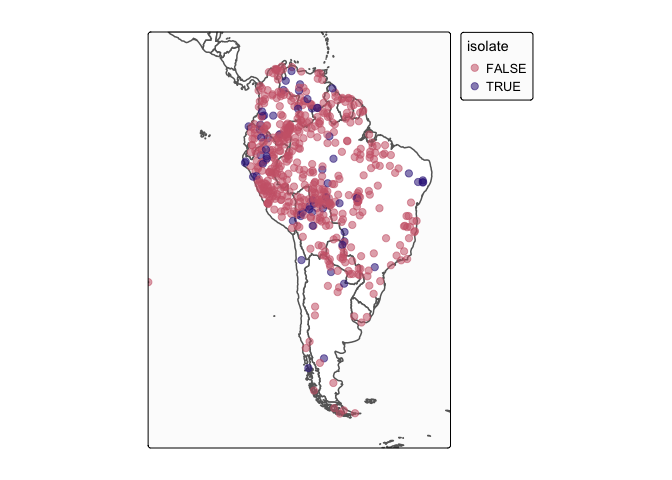
Languages are often represented with points, while in reality the speakers of a language can inhabit vast areas. glottospace works with point and polygon data. When polygon data is not available, you can interpolate the points and plot those.
## Filter by continent
glottopoints <- glottofilter(continent = "South America")
# Interpolate points to polygons:
glottopols <- glottospace(glottopoints, method = "voronoi")
# Plot polygon data:
glottomap(glottodata = glottopols, color = "family_size_rank", palette = "tol.yl_or_br")
#> Warning: attribute variables are assumed to be spatially constant throughout
#> all geometries
#> Warning: Number of levels of the variable assigned to the aesthetic "fill" of
#> the layer "polygons" is 19, which is larger than n.max (which is 5), so levels
#> are combined.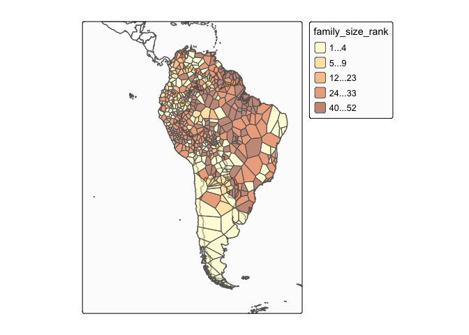
Workflow of glottospace
The glottospace package offers a wide range of functions to work with spatio-linguistic data. The functions are organized into the following function families, of which the core function generally has the same name as the family to which it belongs:
glottoget: download glottodata from remote server, or load locally stored glottodata.
glottocreate: create empty glottodata structure, to add data manually.
glottocheck: run interactive quality checks of user-provided glottodata.
glottoclean: clean-up glottodata.
glottojoin: join user-provided glottodata with other (often online) datasets.
glottosearch: search glottolog database for languages, language families, glottocodes, etc.
glottofilter: filter/subset glottodata based on linguistic and geographic features/variables.
glottodist: calculate differences/similarities between languages based on their features (linguistic, cultural, environmental, geographic, etc.).
glottodist_subdata: calculate differences/similarities between languages based on their constructions.
glottoplot: visualize differences/similarities between languages.
glottospace: make glottodata spatial, add coordinates, add spatial points or polygons to languages.
glottomap: visualize linguistic and cultural data on a map.
glottomap_rips_filt: visualize the Vietoris-Rips filtration.
glottomap_persist_diagram: create the persistence diagram with respect to geospatial points.
glottosave: save output generated by glottospace (data, figures, maps, etc.).
glottoget
You can load locally stored glottodata (for example from an excel file or shapefile). The glottospace package has two built-in artificial demo datasets (“demodata” and “demosubdata”).
glottodata <- glottoget("demodata")
head(glottodata)
#> glottocode var001 var002 var003
#> 1 yucu1253 Y a N
#> 2 tani1257 <NA> b Y
#> 3 ticu1245 Y a Y
#> 4 orej1242 N b N
#> 5 nade1244 N c Y
#> 6 mara1409 N a NYou can also load glottodata from online databases such as glottolog. You can download a raw version of the data (‘glottolog’), or an enriched/boosted version (‘glottobase’):
# To load glottobase:
glottobase <- glottoget("glottobase")
colnames(glottobase)
#> [1] "glottocode" "name" "macroarea" "isocode"
#> [5] "countries" "family_id" "classification" "parent_id"
#> [9] "family" "isolate" "family_size" "family_size_rank"
#> [13] "country" "sovereignty" "type" "geounit"
#> [17] "continent" "adm0_a3" "geometry"In the case of Phoible, you can load it in multiple different ways. When you set glottodata to be “phoible_raw” or “phoiblespace_raw”, you can load the non-spatial/spatial-enhanced version of raw data of Phoible. In the case of spatial-enhanced version, the Parameter ID’s that all values are “absent” are removed.
# To load phoible_raw:
phoible_raw <- glottoget(glottodata = "phoible_raw", download = F)
# To load phoiblespace_raw:
phoiblespace_raw <- glottoget(glottodata = "phoiblespace_raw", download = F)When glottodata = “phoible” or “phoiblespace”, you randomly choose only one sample for all the duplicated glottocodes, and you can load the non-spatial/spatial-enhanced version of Phoible. If you fix the value of seed, you can make a reproducible output. In the case of spatial-enhanced version, the Parameter ID’s that all values are “absent” are removed.
phoible <- glottoget(glottodata = "phoible", seed = 42)
phoiblespace <- glottoget(glottodata = "phoiblespace", seed = 42)When glottodata = “phoible_raw_param_sf”, you can load an sf object of the geographical distribution for all parameter IDs in raw Phoible.
phoible_raw_param_sf <- glottoget(glottodata = "phoible_raw_param_sf")
head(phoible_raw_param_sf)
#> Simple feature collection with 6 features and 1 field
#> Geometry type: MULTIPOINT
#> Dimension: XY
#> Bounding box: xmin: -175.25 ymin: -55.2748 xmax: 178.33 ymax: 73.1354
#> Geodetic CRS: WGS 84
#> Parameter ID geometry
#> 1 72FB536ACFF408163656BBCDAFCAC6F6 MULTIPOINT ((36.5721 5.9503...
#> 2 2F272C9C5FA2DA70706B565B2DC46DE8 MULTIPOINT ((36.5721 5.9503...
#> 3 B6D180EA250E6FBDE82C3D1F1BB4A39C MULTIPOINT ((-1.33254 6.347...
#> 4 CB37024CEAE9409F30FC756C0578E93C MULTIPOINT ((-1.33254 6.347...
#> 5 199408E3D0668F10F475143F0E8CC0CB MULTIPOINT ((10.2267 6.5805...
#> 6 6DD56E3A80E90C3B1F5AC7AC45CE8180 MULTIPOINT ((-61 -29), (-72...When glottodata = “phoible_param_sf”, the function first randomly choose only one sample for all the duplicated glottocodes, and then load the geographical distribution for all parameter IDs as an sf object. If you set the value of seed, you can then create a reproducible dataset.
phoible_param_sf <- glottoget(glottodata = "phoible_param_sf", seed = 42)
head(phoible_param_sf)
#> Simple feature collection with 6 features and 1 field
#> Geometry type: MULTIPOINT
#> Dimension: XY
#> Bounding box: xmin: -175.25 ymin: -55.2748 xmax: 178.33 ymax: 73.1354
#> Geodetic CRS: WGS 84
#> Parameter ID geometry
#> 1 72FB536ACFF408163656BBCDAFCAC6F6 MULTIPOINT ((36.5721 5.9503...
#> 2 2F272C9C5FA2DA70706B565B2DC46DE8 MULTIPOINT ((36.5721 5.9503...
#> 3 B6D180EA250E6FBDE82C3D1F1BB4A39C MULTIPOINT ((1.37035 8.8858...
#> 4 CB37024CEAE9409F30FC756C0578E93C MULTIPOINT ((141.755 -12.39...
#> 5 199408E3D0668F10F475143F0E8CC0CB MULTIPOINT ((10.2267 6.5805...
#> 6 6DD56E3A80E90C3B1F5AC7AC45CE8180 MULTIPOINT ((-61 -29), (-72...glottocreate
You can generate empty data structures that help you to add your own data in a structured way. These data structures can be saved to your local folder by specifying a filename (not demonstrated here).
glottocreate(glottocodes = c("yucu1253", "tani1257"), variables = 3, meta = FALSE)
#> glottocode var001 var002 var003
#> 1 yucu1253 NA NA NA
#> 2 tani1257 NA NA NAWe’ve specified meta = FALSE, to indicate that we want to generate a ‘flat’ glottodata table. However, when creating glottodata, by default, several meta tables are included:
glottodata_meta <- glottocreate(glottocodes = c("yucu1253", "tani1257"), variables = 3)
summary(glottodata_meta)
#> Length Class Mode
#> glottodata 4 data.frame list
#> structure 6 data.frame list
#> description 11 data.frame list
#> references 9 data.frame list
#> remarks 5 data.frame list
#> contributors 5 data.frame list
#> sample 3 data.frame list
#> readme 2 data.frame list
#> lookup 2 data.frame listThe majority of these meta tables are added for the convenience of the user. The ‘structure’ and ‘sample’ tables are the only ones that are required for some of the functions in the glottospace package. A structure table can also be added later:
glottodata <- glottoget("demodata", meta = FALSE)
structure <- glottocreate_structuretable(varnames = c("var001", "var002", "var003"))
glottodata <- glottocreate_addtable(glottodata, structure, name = "structure")More complex glottodata structures can also be generated. For example, in cases where you want to distinguish between groups within each language.
# Instead of creating a single table for all languages, you might want to create a list of tables (one table for each language)
glottocreate(glottocodes = c("yucu1253", "tani1257"),
variables = 3, groups = c("a", "b"), n = 2, meta = FALSE)
#> $yucu1253
#> glottosubcode var001 var002 var003
#> 1 yucu1253_a_0001 NA NA NA
#> 2 yucu1253_a_0002 NA NA NA
#> 3 yucu1253_b_0001 NA NA NA
#> 4 yucu1253_b_0002 NA NA NA
#>
#> $tani1257
#> glottosubcode var001 var002 var003
#> 1 tani1257_a_0001 NA NA NA
#> 2 tani1257_a_0002 NA NA NA
#> 3 tani1257_b_0001 NA NA NA
#> 4 tani1257_b_0002 NA NA NA
#>
#> attr(,"class")
#> [1] "glottosubdata" "list"glottocheck
If you have your own data, you might want to do some interactive quality checks:
glottodata <- glottoget("demodata")
glottocheck(glottodata, diagnostic = FALSE)
#> No missing IDs
#> No duplicate IDs.
#> All variables have two or more levels (excluding NA)
#> Checking 6 glottocodes...
#> All IDs are valid glottocodes
#> Some columns have missing data.
#> Some rows have missing data.
#> glottodata does not contain metadataWe’ve now specified diagnostic = FALSE, but the default is to show some more extensive diagnostics (like a data coverage plot).
You can also check the metadata:
glottodata <- glottoget(glottodata = "demodata", meta = TRUE)
glottocheck(glottodata, checkmeta = TRUE)
#> No missing IDs
#> No duplicate IDs.
#> All variables have two or more levels (excluding NA)
#> Checking 6 glottocodes...
#> All IDs are valid glottocodes
#> Some columns have missing data.
#> var001
#> count 1
#> Some rows have missing data.
#> count
#> tani1257 1
#> This glottodataset contains the folowing tables: glottodata, structure, description, references, remarks, contributors, sample, readme, lookup
#> All types recognized
#> All weights are specified
#> The following variables are in the data, but there are no such columns variables defined in the structure table: glottocode
#> Please check whether the spelling is identical, remove the rows from the structure table, or add the columns to the data.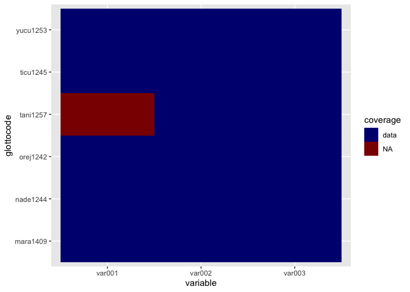
glottoclean
Once you’ve loaded glottodata, you might encounter some inconsistencies. For example, data-contributors might not have used a standardized way of coding missing values.
glottodata <- glottoget(glottodata = "demodata", meta = TRUE)
glottodata_clean <- glottoclean(glottodata)
#> Values in binary columns (symm/asymm) recoded to TRUE/FALSE
#> Missing values recoded to NA
#> All variables have two or more levels (excluding NA)
#>
#> glottodata has been cleaned.
glottodata$glottodata
#> glottocode var001 var002 var003
#> 1 yucu1253 Y a N
#> 2 tani1257 <NA> b Y
#> 3 ticu1245 Y a Y
#> 4 orej1242 N b N
#> 5 nade1244 N c Y
#> 6 mara1409 N a N
glottodata_clean$glottodata
#> glottocode var001 var002 var003
#> 1 yucu1253 TRUE a FALSE
#> 2 tani1257 NA b TRUE
#> 3 ticu1245 TRUE a TRUE
#> 4 orej1242 FALSE b FALSE
#> 5 nade1244 FALSE c TRUE
#> 6 mara1409 FALSE a FALSEglottojoin and glottosimplify
Join user-provided glottodata with other datasets, or with online databases.
# Join with glottospace
glottodata <- glottoget("demodata")
# Add data from glottolog:
glottojoin(glottodata, with = "glottobase")
#> Simple feature collection with 6 features and 21 fields
#> Geometry type: POINT
#> Dimension: XY
#> Bounding box: xmin: -72.4926 ymin: -3.66289 xmax: -66.3068 ymax: -0.59023
#> Geodetic CRS: WGS 84
#> glottocode var001 var002 var003 name macroarea isocode
#> 1 yucu1253 Y a N Yucuna South America ycn
#> 2 tani1257 <NA> b Y Tanimuca-Retuarã South America tnc
#> 3 ticu1245 Y a Y Ticuna South America tca
#> 4 orej1242 N b N Maijiki South America ore
#> 5 nade1244 N c Y Nadëb South America mbj
#> 6 mara1409 N a N Maragua South America
#> countries family_id classification parent_id family
#> 1 BR;CO;PE araw1281 araw1281/japu1236/nucl1764/yucu1252 yucu1252 Arawakan
#> 2 CO tuca1253 tuca1253/east2698/sout3144 sout3144 Tucanoan
#> 3 BR;CO;PE ticu1244 ticu1244 ticu1244 Ticuna-Yuri
#> 4 PE tuca1253 tuca1253/west2784/napo1243 napo1243 Tucanoan
#> 5 BR nada1235 nada1235 nada1235 Naduhup
#> 6 BR araw1281 araw1281/cari1281/anti1247 anti1247 Arawakan
#> isolate family_size family_size_rank country sovereignty type
#> 1 FALSE 77 42 Colombia Colombia Sovereign country
#> 2 FALSE 26 22 Colombia Colombia Sovereign country
#> 3 FALSE 2 2 Colombia Colombia Sovereign country
#> 4 FALSE 26 22 Peru Peru Sovereign country
#> 5 FALSE 4 4 Brazil Brazil Sovereign country
#> 6 FALSE 77 42 Brazil Brazil Sovereign country
#> geounit continent adm0_a3 geometry
#> 1 Colombia South America COL POINT (-71.0033 -0.76075)
#> 2 Colombia South America COL POINT (-70.3853 -0.59023)
#> 3 Colombia South America COL POINT (-69.8723 -3.66289)
#> 4 Peru South America PER POINT (-72.4926 -2.86315)
#> 5 Brazil South America BRA POINT (-66.3068 -1.24449)
#> 6 Brazil South America BRA POINT (-67.51282 -3)
# Simplify glottosubdata (join a list of glottodata tables into a single table)
glottosubdata <- glottocreate(glottocodes = c("yucu1253", "tani1257"),
variables = 3, groups = c("a", "b"), n = 2, meta = FALSE)
glottosimplify(glottodata = glottosubdata)
#> glottosubcode var001 var002 var003
#> 1 yucu1253_a_0001 NA NA NA
#> 2 yucu1253_a_0002 NA NA NA
#> 3 yucu1253_b_0001 NA NA NA
#> 4 yucu1253_b_0002 NA NA NA
#> 5 tani1257_a_0001 NA NA NA
#> 6 tani1257_a_0002 NA NA NA
#> 7 tani1257_b_0001 NA NA NA
#> 8 tani1257_b_0002 NA NA NAglottosearch
As demonstrated in the example above, you can search glottodata for a specific search term
You can search for a match in all columns:
glottosearch(search = "yurakar")
#> Simple feature collection with 1 feature and 18 fields
#> Geometry type: POINT
#> Dimension: XY
#> Bounding box: xmin: -65.1224 ymin: -16.7479 xmax: -65.1224 ymax: -16.7479
#> Geodetic CRS: WGS 84
#> glottocode name macroarea isocode countries family_id
#> 7555 yura1255 Yuracaré South America yuz BO yura1255
#> classification parent_id family isolate family_size family_size_rank
#> 7555 <NA> <NA> Yuracaré TRUE 1 1
#> country sovereignty type geounit continent adm0_a3
#> 7555 Bolivia Bolivia Sovereign country Bolivia South America BOL
#> geometry
#> 7555 POINT (-65.1224 -16.7479)Or limit the search to specific columns:
glottosearch(search = "Yucuni", columns = c("name", "family"))
#> Simple feature collection with 2 features and 18 fields
#> Geometry type: POINT
#> Dimension: XY
#> Bounding box: xmin: -97.91818 ymin: -0.76075 xmax: -71.0033 ymax: 17.23743
#> Geodetic CRS: WGS 84
#> glottocode name macroarea isocode countries family_id
#> 7541 yucu1253 Yucuna South America ycn BR;CO;PE araw1281
#> 7542 yucu1254 Yucunicoco Mixtec North America MX otom1299
#> classification parent_id
#> 7541 araw1281/japu1236/nucl1764/yucu1252 yucu1252
#> 7542 otom1299/east2557/amuz1253/mixt1422/mixt1423/mixt1427/sout3179 sout3179
#> family isolate family_size family_size_rank country sovereignty
#> 7541 Arawakan FALSE 77 42 Colombia Colombia
#> 7542 Otomanguean FALSE 181 46 Mexico Mexico
#> type geounit continent adm0_a3
#> 7541 Sovereign country Colombia South America COL
#> 7542 Sovereign country Mexico North America MEX
#> geometry
#> 7541 POINT (-71.0033 -0.76075)
#> 7542 POINT (-97.91818 17.23743)Sometimes you don’t find a match:
glottosearch(search = "matsigenka")[,"name"]
#> Simple feature collection with 0 features and 1 field
#> Bounding box: xmin: NA ymin: NA xmax: NA ymax: NA
#> Geodetic CRS: WGS 84
#> [1] name geometry
#> <0 rows> (or 0-length row.names)If you can’t find what you’re looking for, you can increase the tolerance:
glottosearch(search = "matsigenka", tolerance = 0.2)[,"name"]
#> Simple feature collection with 1 feature and 1 field
#> Geometry type: POINT
#> Dimension: XY
#> Bounding box: xmin: -74.4371 ymin: -11.5349 xmax: -74.4371 ymax: -11.5349
#> Geodetic CRS: WGS 84
#> name geometry
#> 4787 Nomatsiguenga POINT (-74.4371 -11.5349)Aha! There it is: ‘Machiguenga’
glottosearch(search = "matsigenka", tolerance = 0.4)[,"name"]
#> Simple feature collection with 12 features and 1 field
#> Geometry type: POINT
#> Dimension: XY
#> Bounding box: xmin: -74.4371 ymin: -14.9959 xmax: 166.738 ymax: 13.5677
#> Geodetic CRS: WGS 84
#> First 10 features:
#> name geometry
#> 1710 Eastern Maninkakan POINT (-10.5394 9.33048)
#> 3063 Kita Maninkakan POINT (-9.49151 13.1798)
#> 3147 Konyanka Maninka POINT (-8.89972 8.04788)
#> 3731 Maasina Fulfulde POINT (-3.64763 11.1324)
#> 3747 Machiguenga POINT (-72.5017 -12.1291)
#> 3901 Mandinka POINT (-15.65395 12.81652)
#> 3937 Mansoanka POINT (-15.9202 12.8218)
#> 4040 Matigsalug Manobo POINT (125.16 7.72124)
#> 4787 Nomatsiguenga POINT (-74.4371 -11.5349)
#> 5383 Piamatsina POINT (166.738 -14.9959)glottofilter
filter, select, query
eurasia <- glottofilter(continent = c("Europe", "Asia"))
eurasia
#> Simple feature collection with 2583 features and 18 fields
#> Geometry type: POINT
#> Dimension: XY
#> Bounding box: xmin: -173.925 ymin: -10.8469 xmax: 175.07 ymax: 73.1354
#> Geodetic CRS: WGS 84
#> First 10 features:
#> glottocode name macroarea isocode countries family_id
#> 1 abai1240 Abai Sungai Papunesia abf MY aust1307
#> 2 abai1241 Abai Tubu-Abai Sembuak Papunesia ID aust1307
#> 3 abaz1241 Abaza Eurasia abq RU;TR abkh1242
#> 4 aben1249 Abenlen Ayta Papunesia abp PH aust1307
#> 5 abin1243 Abinomn Papunesia bsa ID abin1243
#> 6 abkh1244 Abkhaz Eurasia abk GE;RU;TR abkh1242
#> 7 abui1241 Abui Papunesia abz ID timo1261
#> 8 abun1252 Abun Papunesia kgr ID abun1252
#> 9 acha1249 Longchuan Achang Eurasia acn CN;MM sino1245
#> 10 ache1244 Ache Eurasia yif CN sino1245
#> classification
#> 1 aust1307/mala1545/nort3253/sout3154/grea1293/pait1248
#> 2 aust1307/mala1545/nort3253/sout3154/grea1294/muru1275
#> 3 abkh1242/abkh1243
#> 4 aust1307/mala1545/cent2080/samb1319/abel1234
#> 5 <NA>
#> 6 abkh1242/abkh1243
#> 7 timo1261/alor1249/alor1250
#> 8 <NA>
#> 9 sino1245/burm1265/lolo1265/burm1266/sout3159/acha1252
#> 10 sino1245/burm1265/lolo1265/lolo1267/nili1235/sout3212/niso1234/uncl1517
#> parent_id family isolate family_size family_size_rank country
#> 1 pait1248 Austronesian FALSE 1271 52 Malaysia
#> 2 muru1275 Austronesian FALSE 1271 52 Indonesia
#> 3 abkh1243 Abkhaz-Adyge FALSE 5 5 Russia
#> 4 abel1234 Austronesian FALSE 1271 52 Philippines
#> 5 <NA> Abinomn TRUE 1 1 Indonesia
#> 6 abkh1243 Abkhaz-Adyge FALSE 5 5 Georgia
#> 7 alor1250 Timor-Alor-Pantar FALSE 23 20 Indonesia
#> 8 <NA> Abun TRUE 1 1 Indonesia
#> 9 acha1252 Sino-Tibetan FALSE 501 50 China
#> 10 uncl1517 Sino-Tibetan FALSE 501 50 China
#> sovereignty type geounit continent adm0_a3
#> 1 Malaysia Sovereign country Malaysia Asia MYS
#> 2 Indonesia Sovereign country Indonesia Asia IDN
#> 3 Russia Sovereign country Russia Europe RUS
#> 4 Philippines Sovereign country Philippines Asia PHL
#> 5 Indonesia Sovereign country Indonesia Asia IDN
#> 6 Georgia Geo unit Georgia Asia GEO
#> 7 Indonesia Sovereign country Indonesia Asia IDN
#> 8 Indonesia Sovereign country Indonesia Asia IDN
#> 9 China Country China Asia CHN
#> 10 China Country China Asia CHN
#> geometry
#> 1 POINT (118.306 5.55394)
#> 2 POINT (116.1625 3.524226)
#> 3 POINT (42 44.25)
#> 4 POINT (120.2 15.4131)
#> 5 POINT (138.891 -2.92281)
#> 6 POINT (41.15911 43.05622)
#> 7 POINT (124.588 -8.31058)
#> 8 POINT (132.416 -0.57073)
#> 9 POINT (97.7438 24.3479)
#> 10 POINT (102.446 24.152)
# Other examples of glottofilter:
wari <- glottofilter(glottocode = "wari1268")
indo_european <- glottofilter(family = 'Indo-European')
south_america <- glottofilter(continent = "South America")
colovenz <- glottofilter(country = c("Colombia", "Venezuela"))
arawtuca <- glottofilter(expression = family %in% c("Arawakan", "Tucanoan"))You can also interactively filter languages by drawing or clicking on a map:
# selected <- glottofiltermap(continent = "South America")
# glottomap(selected)glottodist
Quantify differences or disimilarities between languages glottodistances: calculating disimilarities between languages based on linguistic/cultural features.
The glottodist can compute two types of distance/dissimilarity by setting the argument metric. When metric="gower", it returns the Gower distance, when metric="anderberg", it returns the Anderberg dissimarity. The default value is metric="gower".
# In order to be able to calculate linguistic distances a structure table is required, that's why we specify meta = TRUE. In case you have glottodata without a structure table, you can add it (see examples in the glottocreate() section).
glottodata <- glottoget("demodata", meta = TRUE)
glottodist_gower <- glottodist(glottodata = glottodata, metric = "gower")
glottodist_anderberg <- glottodist(glottodata = glottodata, metric = "anderberg")glottodist_subdata
You can also compute the differences or disimilarities between languages based on constructions. The function glottodist_subdata contains three types of disimilarities, i.e., “Matching Constructions Index (MCI)”, “Relative Index (RI)”, and “Form-Meaning Index (FMI)” based on either gower distance or Anderberg distance.
For example, suppose if the language “tani1257” contains three constructions “tani1257_0001”, “tani1257_0002”, “tani1257_0003”, and the language “yucu1253” contains two constructions “yucu1253_0001”, “yucu1253_0002”.
| glottosubcode | var001 | var002 | var003 | var004 | var005 | var006 | var007 |
|---|---|---|---|---|---|---|---|
| tani1257_0001 | 0 | 1 | 0 | 0 | 1 | 1 | 1 |
| tani1257_0002 | 0 | 0 | 1 | 0 | 0 | 0 | 1 |
| tani1257_0003 | 0 | 0 | 1 | 0 | 1 | 1 | 0 |
| glottosubcode | var001 | var002 | var003 | var004 | var005 | var006 | var007 |
|---|---|---|---|---|---|---|---|
| yucu1253_0001 | 0 | 1 | 0 | 0 | 1 | 1 | 1 |
| yucu1253_0002 | 0 | 0 | 1 | 0 | 1 | 0 | 1 |
The Matching Constructions Index of tani1257 and yucu1253 w.r.t. gower distance is given by
glottoget(glottodata = "demosubdata_cnstn") |>
glottodist_subdata(metric = "gower", index_type = "mci")
#> tani1257
#> yucu1253 0.1071429If the meaning features are “var001”, “var002”, “var003”, “var004”, and the form features are “var005”, “var006”, “var007”, the Atomic Meaning Index of tani1257 and yucu1253 w.r.t. gower distance is given by
glottoget(glottodata = "demosubdata_cnstn") |>
glottodist_subdata(metric = "gower", index_type = "ri",
avg_idx = 1:4, fixed_idx = 5:7)
#> tani1257
#> yucu1253 0.125and the Atomic Form Index of tani1257 and yucu1253 w.r.t. gower distance is given by
glottoget(glottodata = "demosubdata_cnstn") |>
glottodist_subdata(metric = "gower", index_type = "ri",
avg_idx = 5:7, fixed_idx = 1:4)
#> tani1257
#> yucu1253 0.25and the Form-Meaning Index is given by
glottoget(glottodata = "demosubdata_cnstn") |>
glottodist_subdata(index_type = "fmi",
avg_idx = 1:4, fixed_idx = 5:7)
#> tani1257
#> yucu1253 0.08333333glottoplot
Visualizing differences (distances) between languages based on linguistic, cultural, and environmental features.
glottodata <- glottoget("demodata", meta = TRUE)
glottodist <- glottodist(glottodata = glottodata)
glottoplot(glottodist = glottodist)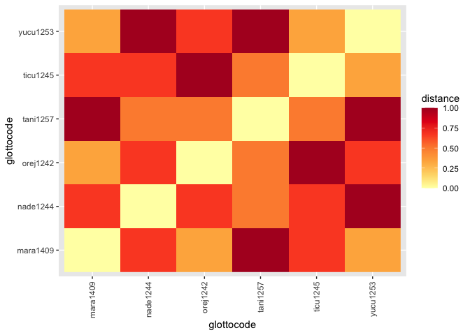
glottospace
This family of functions turns glottodata into a spatial object. As we’ve illustrated above, these can be either glottopoints or glottopols
glottodata <- glottoget("demodata")
glottospacedata <- glottospace(glottodata, method = "buffer", radius = 5)
#> Buffer created with a radius of 5 km.
# By default, the projection of maps is equal area, and shape is not preserved:
glottomap(glottospacedata)
#> Warning: attribute variables are assumed to be spatially constant throughout
#> all geometries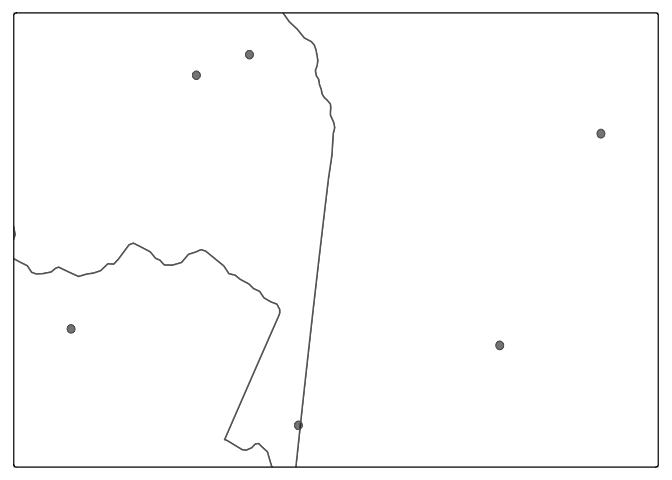
glottomap
With glottomap you can quickly visualize the location of languages. Below we show simple static maps, but you can also create dynamic maps by specifying type = “dynamic”.
To select languages, you don’t need to call glottofilter() first, but you can use glottomap() directly. Behind the scenes glottomap() passes those arguments on to glottofilter().
glottomap(country = "Colombia")
#> Warning: attribute variables are assumed to be spatially constant throughout
#> all geometries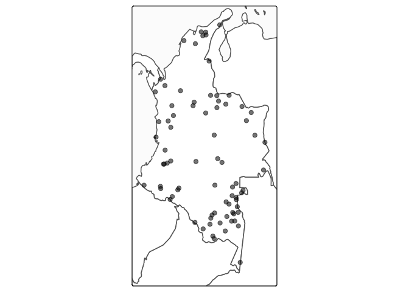
However, you can also create maps with other glottodata. For example, we might want to create a world map highlighting the largest language families
glottodata <- glottoget()
families <- dplyr::count(glottodata, family, sort = TRUE)
# highlight 5 largest families:
glottodata <- glottospotlight(glottodata = glottodata, spotcol = "family", spotlight = families$family[1:5], spotcontrast = "family")
# Create map
glottomap(glottodata, color = "legend", glotto_title = "Top 5 largest languages families", ptsize=.3,
palette = "Set 1", alpha = .8)
#> Warning: attribute variables are assumed to be spatially constant throughout
#> all geometries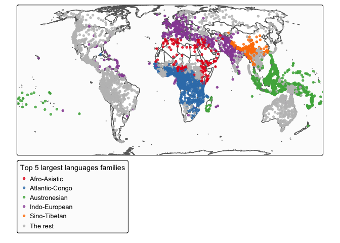
You can also produce maps based on either countries or hydro-basins. The hydro-basin basemap is cited from HydroSHEDS of Level 03.
par(mar = c(2, 2, .1, .1))
## Filter by continent
glottopoints <- glottofilter(continent = "South America")
## Sort the families
families <- dplyr::count(glottopoints, family, sort = TRUE)
## Plot the top 5 languages based on countries
glottomap(glottopoints[glottopoints$family %in% families$family[1:5], ], basemap = "country",
color = "family", palette = "paired", alpha = .9)
#> Warning: attribute variables are assumed to be spatially constant throughout
#> all geometries
## Plot the top 5 languages based on hydro-basins
glottomap(glottopoints[glottopoints$family %in% families$family[1:5], ], basemap = "hydro-basin",
color = "family", palette = "paired", alpha = .9)
#> Warning: attribute variables are assumed to be spatially constant throughout
#> all geometries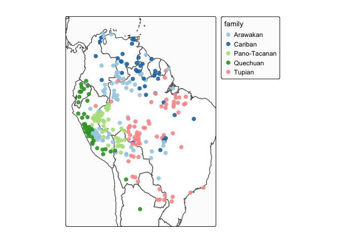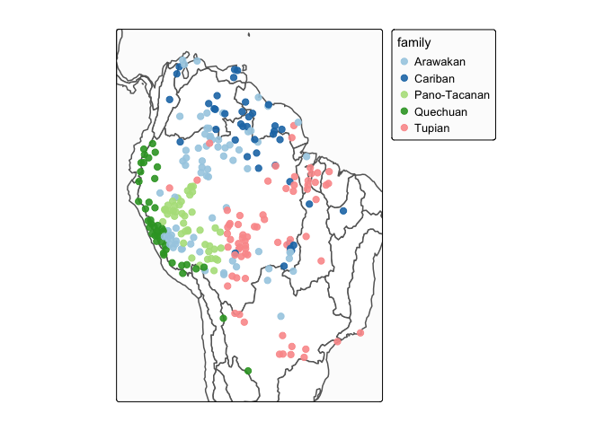
glottomap_rips_filt
You can visualize the topological pattern of spatial distribution of languages using function glottomap_rips_filt(). More technically, this method of visualization is referred to as “Vietoris-Rips filtration”. In the function glottomap_rips_filt(), the default units of r and maxscale are both 100km, corresponding to the buffer radius of each language and the maximum value of the Vietoris-Rips filtration respectively.
For example, if we filter out the languages of Arawakan family, and set the buffer radius of each language as 600 km, the maximum value of the Vietoris-Rips filtration as 1500 km, we can see that there is a circluar structure around the borders of Colombia, Peru and Brazil:
# Pick up all the Arawakan languages
glottopoints <- glottofilter(continent = "South America")
awk <- glottopoints[glottopoints$family == "Arawakan", ]
# Create a static Vietoris-Rips filtration map
glottomap_rips_filt(glottodata = awk, r = 6, maxscale = 15, is_animate = FALSE) 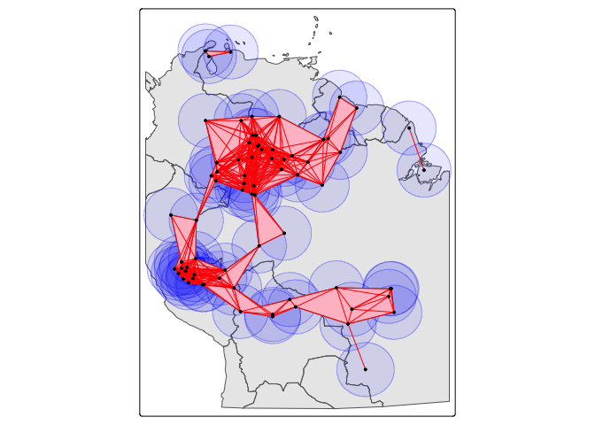
If you set the the argument is_animate = TRUE, you can then generate a GIF file, here the buffer radius ranges from 0 km to 800 km:
glottopoints <- glottofilter(continent = "South America")
# Pick up all the Arawakan languages
awk <- glottopoints[glottopoints$family == "Arawakan", ]
# Create a GIF file of Vietoris-Rips filtration map
glottomap_rips_filt(glottodata = awk, r = 8, maxscale = 15, is_animate = TRUE,
length.out = 30, movie.name = "filtration.gif") glottomap_persist_diagram
The persistent topological structure (clusters and circular structures) can be described by the so-call “persistence diagram”, you can see that there is a unique point of dimension 1 standing out of the diagonal line when “Birth” is around 600 km and “Death” is around 800 km, this is consistent with the precious visualization of Vietoris-Rips filtration:
# Pick up all the Arawakan languages
glottopoints <- glottofilter(continent = "South America")
awk <- glottopoints[glottopoints$family == "Arawakan", ]
# Create a static Vietoris-Rips filtration map
glottomap_persist_diagram(awk, maxscale = 15)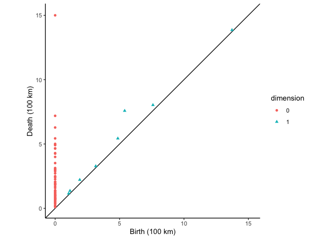
glottosave
All output generated with the glottospace package (data, figures, maps, etc.) can be saved with a single command.
glottodata <- glottoget("demodata", meta = FALSE)
# Saves as .xlsx
# glottosave(glottodata, filename = "glottodata")
# Saves as .GPKG
glottospacedata <- glottospace(glottodata)
# glottosave(glottospacedata, filename = "glottospacedata")
# By default, static maps are saved as .png, dynamic maps are saved as .html
glottomap <- glottomap(glottodata)
#> Warning: attribute variables are assumed to be spatially constant throughout
#> all geometries
# glottosave(glottomap, filename = "glottomap")